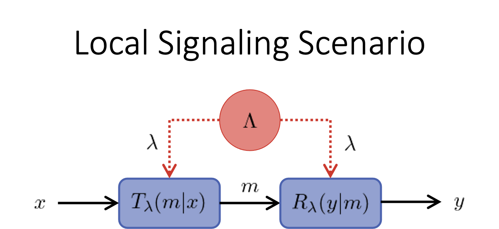
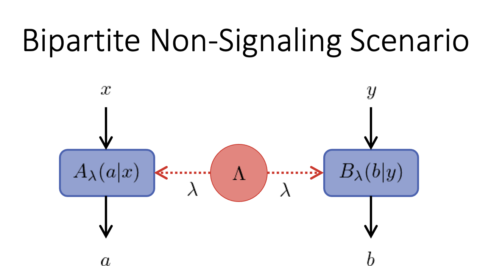

BellScenario.jl - Scenarios
BellScenario.Scenario — TypeA Scenario is an abstract type parent to all Bell scenarios. Each child of this abstract type describes a distinct black-box system configuration.
BellScenario.BlackBox — TypeBlackBox(num_out :: Int64, num_in :: Int64) <: ScenarioA Bell scenario consisting of a single black-box device with num_in inputs and num_out outputs.
The black-box device computes the output $y$ from the input $x$ by performing a stochastic map $S(y|x)$.
Errors
A DomainError is thrown if parameters num_out or num_in is less than 1.
BellScenario.LocalSignaling — TypeLocalSignaling(
X :: Int64,
Y :: Int64,
d :: Int64,
) <: ScenarioA bipartite signaling scenario where information is passed from a transmitter black-box to a receiver black-box using no more than d dits of communication.

The transmitter device has X inputs and the receiver device has Y outputs and shared randomness is held between the two devices. When quantum communication is used instead of classical communication no Bell violations occur.
Errors
A DomainError is thrown if X, Y, or d is less than 1.
BellScenario.BipartiteNonSignaling — TypeBipartiteNonSignaling(
A :: Int64,
B :: Int64,
X :: Int64,
Y :: Int64
) <: ScenarioA bipartite non-signaling scenario where each device receives an input and produces an output. Let Alice be the device with A outputs and X inputs while Bob is the device with B outputs and Y inputs.

Shared randomness is held between Alice and Bob. When Alice and Bob share quantum entanglement, Bell violations are known to occur.
Errors
A DomainError is thrown if A, B, X, or Y is less than 1.
BellScenario.BipartiteSignaling — TypeBipartiteSignaling(
A :: Tuple{Int64, Int64},
B :: Tuple{Int64, Int64};
dits :: Int64 = 1,
bidirectional :: Bool = false
) <: ScenarioA bipartite signaling scenario where each device can send a message to the other.